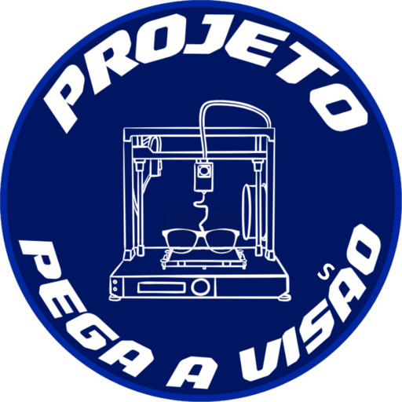
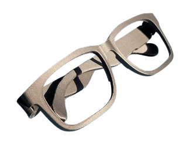
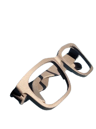
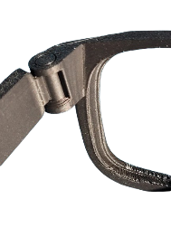

Projeto escolar · STEM · sustentável
Enxergar bem para aprender melhor
O Pega a Visão fabrica armações ecológicas com filamento de baixo custo, em uma oficina de impressão 3D feita pela própria escola.
O projeto
Por que o Pega a Visão existe
Estudantes com necessidade de correção visual enfrentam dificuldades para ler, prestar atenção e aprender quando não têm óculos adequados. Para muitas famílias, o custo de uma armação nova é alto e, quando os óculos quebram, o conserto demora ou nem acontece.
O projeto nasce na escola como uma iniciativa de aprendizagem STEM: os próprios estudantes da oficina produzem armações ecológicas, duráveis e ergonômicas com filamento de baixo custo e imprimem peças para consertar os óculos quebrados de quem já tem.
Nossos objetivos
- Reduzir o custo dos óculos novos para as famílias.
- Ajudar na manutenção de estudantes que já têm óculos e estão quebrados.
- Promover a aprendizagem STEM com um problema real da comunidade.
Como funciona
Do pedido à entrega
Todo o acompanhamento fica em um só lugar, e o estudante vê em que etapa está o seu pedido de armação nova ou de conserto.
- Pedido. O estudante ou o responsável pede uma armação nova ou o conserto de um óculos quebrado.
- Aceitação. A equipe avalia o pedido e as medidas informadas.
- Modelagem. A armação ou a peça de reparo é ajustada no computador.
- Impressão 3D. A peça é impressa com filamento de baixo custo.
- Acabamento. A equipe revisa e finaliza a peça.
- Entrega. A armação vai direto ao estudante ou, se houver interesse em lentes com receita, para uma ótica parceira, com os custos das lentes informados antes.
O projeto não faz diagnóstico: estudantes com sinais de dificuldade para enxergar devem ser encaminhados à família e a um profissional de saúde.
Aprender fazendo
STEM na prática
Ciência
Reciclagem e propriedades do PET como material.
Tecnologia
Modelagem e impressão 3D.
Engenharia
Projeto de uma armação ergonômica e durável.
Matemática
Medidas do rosto, escalas e ajuste de tamanho.
Agenda 2030
Nossas ODS
O Pega a Visão contribui com os Objetivos de Desenvolvimento Sustentável (ODS) da ONU, em especial com a ODS 3 (nosso objetivo principal), além das ODS 4 e 12.
ODS principalODS 3Saúde e Bem-Estar
Objetivo: Assegurar uma vida saudável e promover o bem-estar para todos, em todas as idades.
Como contribuímos
- Armações e consertos gratuitos para que estudantes possam corrigir a visão e cuidar da saúde visual.
- Encaminhamento a óticas parceiras para lentes com receita, com os custos informados antes às famílias.
- Acompanhamento de cada estudante atendido pelo painel da escola.
ODS 4Educação de Qualidade
Objetivo: Assegurar a educação inclusiva e equitativa e de qualidade, e promover oportunidades de aprendizagem ao longo da vida para todos.
Como contribuímos
- Armações e consertos gratuitos para estudantes que precisam enxergar bem para aprender.
- Oficina STEM feita pelos próprios estudantes, com um problema real da comunidade.
- Painel da escola para acompanhar cada estudante atendido.
ODS 12Consumo e Produção Responsáveis
Meta 12.5: Até 2030, reduzir substancialmente a geração de resíduos por meio da prevenção, redução, reciclagem e reuso.
Como contribuímos
- Reciclagem: as armações usam filamento de baixo custo.
- Reuso: óculos quebrados são consertados com peças impressas em 3D, em vez de irem para o lixo.
- Prevenção: a impressão 3D sob demanda produz só o que foi pedido, sem desperdício.
Nossos óculos
Armações feitas na oficina
As armações são impressas em 3D com um mecanismo dobrável que já sai montado da impressora, existe uma versão menor, em 80% do tamanho, para rostos infantis, e há opção de encaixar lentes reais.



Impacto
Resultados até agora
ODS 4armações produzidas para estudantes
ODS 12.5óculos consertados, que deixaram de virar lixo
ODS 12.5garrafas PET recicladas (estimativa)